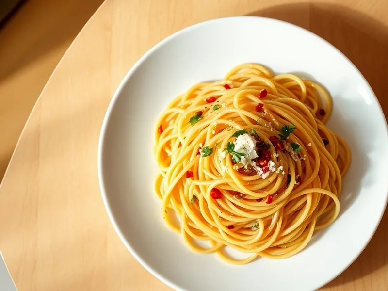

Спагетти аглио-олио с чесноком и перцем
Спагетти в оливковом масле с золотистым чесноком, перцем чили и петрушкой
15 мин2 порц.581 ккал на порциюБ 11 · Ж 26 · У 74Итальянская кухня
Открыть в приложении: порции, таймеры, список покупок
Продукты на 2 порц.
- Макароны200 г
- Оливковое масло3 ст. л.
- Чеснок4 зуб.
- Острый перец молотый1 щеп.
- Петрушка0,5 пучка
- Пармезан по желаниюпо вкусу
- Соль2 ч. л.
- Вода2000 мл
Как готовить
- Вскипятите воду на сильном огне, посолите и сварите спагетти на 1 минуту меньше, чем указано на упаковке, обычно 8-9 минут.
- Пока варится паста, нарежьте чеснок тонкими пластинками, петрушку мелко порубите.
- Налейте масло в холодную сковороду, положите чеснок и прогревайте на слабом огне 3-4 минуты, пока пластинки не станут светло-золотистыми. Добавьте чили и снимите с огня.
- Отлейте 100 мл воды от пасты, спагетти откиньте и переложите в сковороду с чесноком.
- Верните сковороду на средний огонь, влейте половину отлитой воды и перемешивайте 1-2 минуты, пока масло и вода не превратятся в лёгкий глянцевый соус.
- Посыпьте петрушкой, перемешайте и сразу подавайте, по желанию с тёртым пармезаном.
Совет. Чеснок не должен темнеть: коричневый чеснок горчит и портит всё блюдо, поэтому держите огонь слабым.